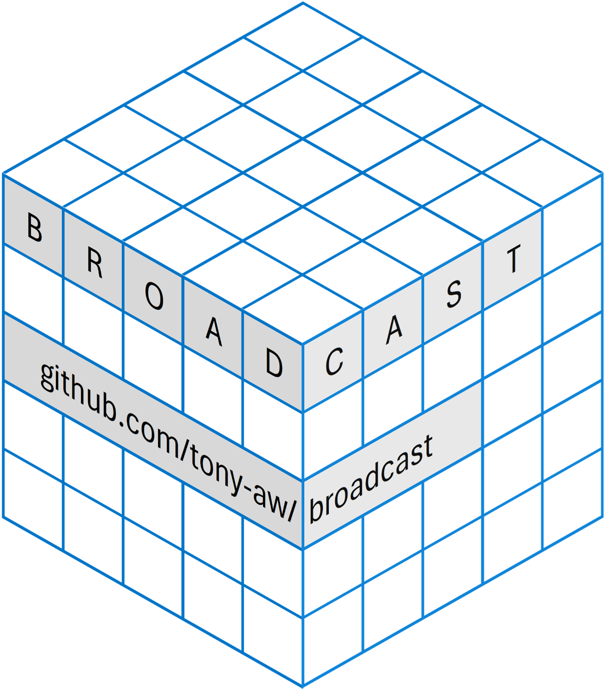

Introduction
🗺️Overview
The ‘broadcast’ ‘R’-package, as the name suggests, performs “broadcasting” (similar to broadcasting in the ‘Numpy’ module for ‘Python’).
In the context of operations involving 2 (or more) arrays, “broadcasting” refers to recycling array dimensions without allocating additional memory, which is considerably faster and more memory-efficient than R’s regular dimensions replication mechanism.
Please read the article “Broadcasting explained” for a more complete explanation of what “broadcasting” is.
At its core, the ‘broadcast’ package provides 3 functionalities, all 3 related to “broadcasting”:
First, ‘broadcast’ provides functions for element-wise outer computations between any 2 arrays.
These are similar to base R’s outer() function, but using broadcasting, which is faster and more efficient than the mechanism employed by outer().
The outer-like functions provided by ‘broadcast’ are optimised for a large set of relational-, arithmetic-, Boolean-, and string operations.
These functions have clear broadcasting rules, making it easy to accurately predict the dimensions of the result.
Second, ‘broadcast’ provides the bind_array() function, which is a broadcasted and enhanced form of the fantastic abind::abind() function:
- bind_array() allows for broadcasting (obviously), whereas
abind::abind()does not. - bind_array() is significantly faster and uses less memory than
abind::abind(). - bind_array() also differs from
abind::abind()in that it can handle recursive arrays properly;abind::abind()unlists everything to atomic arrays, ruining the structure.
Third, ‘broadcast’ provides several generic functions for broadcasting:
- bcapply(): a broadcasted apply-like function that works on pairs of arrays.
- bc_ifelse(): a broadcasted
ifelse()function. Broadcasts between theyesandnoarguments.
Additionally, ‘broadcast’ includes the acast() function, for casting/pivoting an array into a new dimension. Roughly analogous to data.table::dcast(), but for arrays.
🤷🏽Why use ‘broadcast’
Efficiency
Broadcasting dimensions is faster and more memory efficient than repeating dimensions.
This is not simply a need for speed.
Efficient programs use less energy and resources, and is thus better for the environment.
As a favoured language for the sciences, ‘R’ should not throw away an opportunity to become more efficient.
The Benchmarks show that ‘broadcast’ has a somewhat similar speed as equivalent operations in ‘Numpy’.
Convenience
Broadcasting can make many applications much faster to write and easier to reason about.
For Example: Suppose you want to compute some metric on all possible pair-wise combinations of the elements of 2 vectors.
You could write slow and ugly nested for-loops…
But you can instead also make the vectors orthogonal, and perform the broadcasting computation on the 2 orthogonal vectors.
The broadcasted method runs much faster, is faster to type, and easier to reason about, than using the clumsy nested for-loops.
For more practical examples, see Examples of Practical Applictaions.
Minimal Dependencies
Besides linking to ‘Rcpp’, ‘broadcast’ does not depend on, vendor, link to, include, or otherwise use any external libraries; ‘broadcast’ was essentially made from scratch and can be installed out-of-the-box.
Not using external libraries brings a number of advantages:
- Avoid dependency hell: Every dependency that is added to a software package increases the likelihood of something breaking (AKA “dependency hell”). ‘broadcast’ thus avoids this.
- Avoid wasting resources for translations: Using libraries from other languages, such as ‘xtensor’ (‘C++’) or ‘Numpy’ (‘Python’) means that - at some point - one needs to convert between the structure of R to that of the other language, and vice-versa, which wastes precious time, memory, and power. ‘broadcast’ requires no such translations of structures, and is therefore much less wasteful.
- Ensure consistent behaviour: Using libraries from other languages also means one cannot always guarantee consistent behaviour for some operations. For example: both ‘Numpy’ and ‘xtensor’ have only limited support for missing values, whereas ‘R’ supports missing values for both atomic and recursive array/vector types (except type of ‘Raw’). Since ‘broadcast’ does not rely on external libraries, it can ensure behaviour that is consistent with the rest of ‘R’.
📖Documentation
The documentation in the ‘broadcast’ website is divided into 3 main navigationable sections:
- Guides and Vignettes: Here you’ll find the topic-oriented guides in the form of a few Vignettes.
- Reference Manual: Here you’ll find the function-oriented reference manual.
- About: Here you’ll find mainly the Changelog and License file.